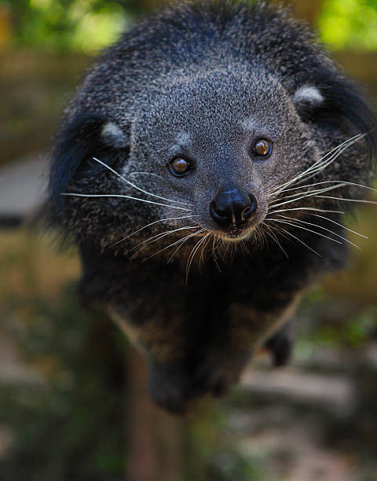
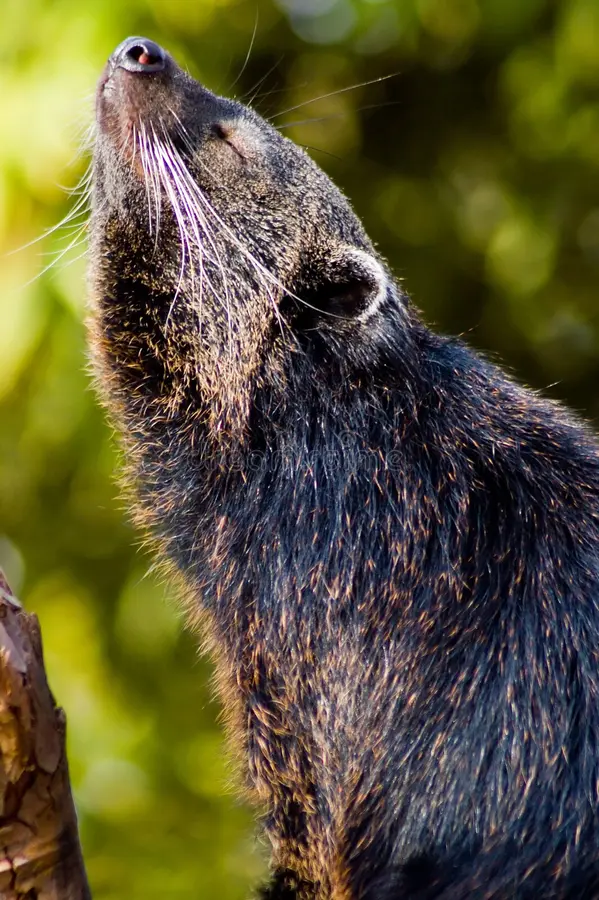

Appearance & Adaptations

Binturongs have a look that is hard to confuse with any other animal. Their heavy bodies, shaggy coats, long whiskers, and powerful tails are all useful for life in the forest canopy.
Shaggy coat and strong body

A binturong's coat is usually dark brown to black and can have lighter or silvery tips. The body is low, muscular, and roughly the size of a medium dog. Their feet have long claws that help them hold onto bark and branches.
The prehensile tail
One of the binturong's most noticeable adaptations is its long, muscular prehensile tail. The tail can wrap around branches and act almost like an extra hand while the animal climbs. A leathery area near the tip provides extra grip.
Built for climbing
Binturongs spend much of their time in trees. Their padded feet, curved claws, and flexible ankles help them move through branches. They can rotate their ankles enough to keep a strong grip while climbing down a tree headfirst.
The popcorn smell
Binturongs use scent to communicate. Their urine contains a chemical compound associated with the smell of cooked popcorn, which is why people often describe them as smelling like a movie theater snack.
At a glance
| Coat | Long, coarse, dark brown to black |
|---|---|
| Tail | Long, muscular, and prehensile |
| Feet | Padded with strong claws for climbing |
| Notable feature | Distinctive popcorn-like scent |